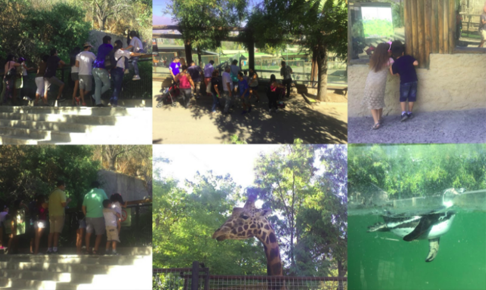
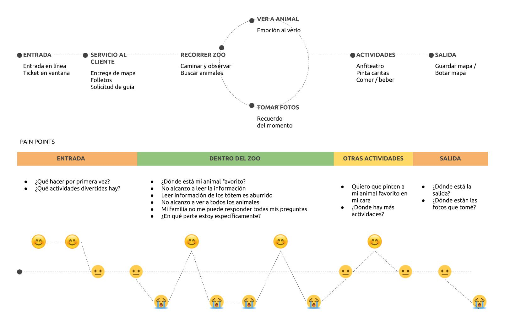
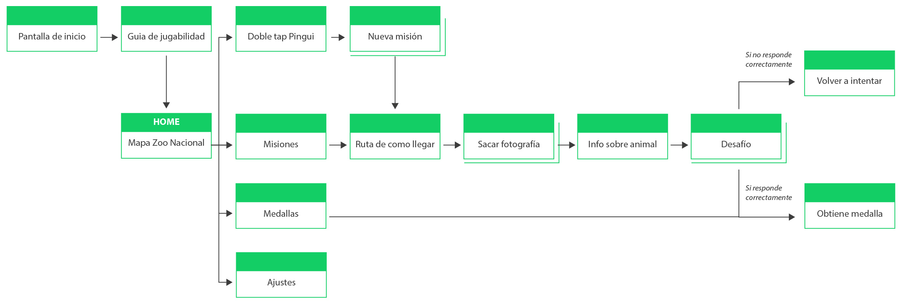
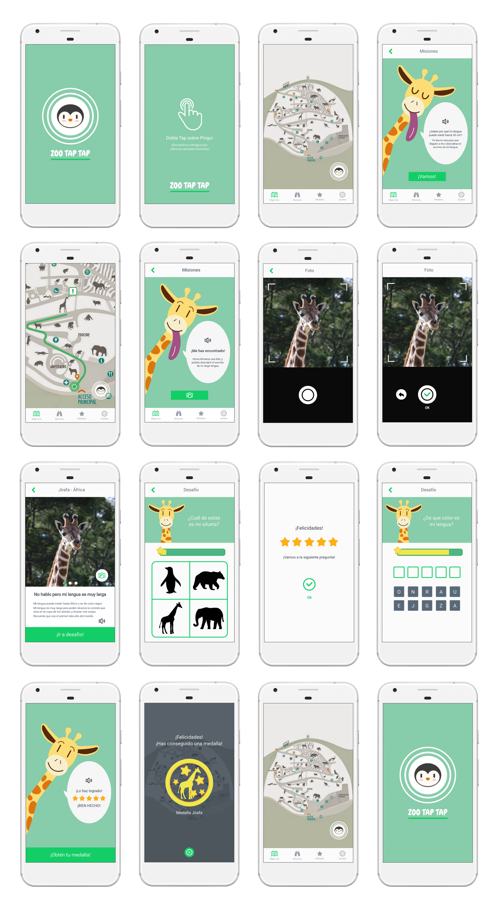

USUARIO PRIMARIO: BASTIAN

Zoo TapTap es una aplicación que busca involucrar a niños con un rango de edad de 6 a 10 años con los animales del zoológico Nacional de Chile. Esta aplicación ofrece a los niños misiones fotográficas y desafíos, para que a través del juego aprendan sobre sus animales favoritos. Al descubrir los secretos sobre los animales y completar los desafíos los niños ganan medallas de recompensa, para que adquieran un rol de líder dentro de la actividad.
Los niños necesitan involucrarse de manera interactiva con los animales del zoológico para aprender sobre sus animales favoritos.
UNO
Conclusiones entrevistas a profesoras y ex guía del Buin Zoo. Se hizo una guía de entrevista para profesores y/o guías de zoológicos con el objetivo de averiguar cómo es el aprendizaje de los alumnos de primero a cuarto básico, cuando van al zoológico u otro paseo educativo. En esta ocasión se entrevistó a Claudia Vera (profesora de inglés de niños de 4 a 10 años), Francisca Pardo (profesora de educación general básica del colegio Seminario Padre Hurtado) y a Gabriel González (ex guía Buin Zoo).
Luego de realizar las entrevistas se pudo concluir lo siguiente:
DOS
Observación en terreno: Visité el zoológico Nacional de Chile, el día Domingo 11 de Marzo del 2018, para observar el comportamiento de los niños en zoológico, realizar entrevistas a niños y sacar fotografías, además de participar del recorrido como una espectadora más y así Investigar los puntos de conflicto (paint points) de niños de 6 a 10 años, en la experiencia de ir al zoológico e identificar puntos de mejora durante su visita, obteniendo de esta manera insights para poder comenzar a conceptualizar e idealizar el proyecto.
Puntos de conflicto, conclusiones:
Se realizó un mapa de viaje, para identificar los puntos críticos de los usuarios en las diferentes etapas cuando van al zoológico y así conseguir oportunidades de mejora.
Se realizo una arquitectura de la organización, para organizar, etiquetar y diseñar el contenido que tendrá la aplicación Zoo TapTap. Esto me permite dar estructura, completar objetivos y dar sentido a la información.
Se utilizó user flow para determinar el trayecto que realizarán los diferentes usuarios para realizar diferentes tareas dentro de la aplicación. Luego se testearon los wireframes y se anotaron las observaciones con post-it. Las primeras pruebas de usabilidad se realizaron en prototipos de papel. Las tareas que debian hacer los usuarios eran:
Las observaciones hechas en el testing fueron corregidas, para así mejorar la experiencia del usuario al momento de ocupar la aplicación. Este nuevo prototipo fue hecho con la herramienta Marvelapp.
